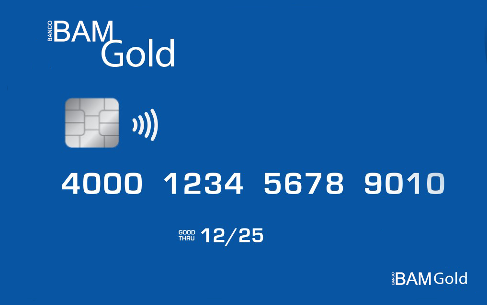

Produtos e Serviços
- Sem anuidade
- Descontos em parceiros pra economizar mais
- Fatura do seu cartão por e-mail
- Parcelamento de fatura em até 24x
*Sujeito à análise de crédito.
Conta Digital
- Controle seus gastos em tempo real
- A conta digital com mais de 20 milhões de brasileiros
- Tenha crédito pessoal com o seu perfil**
- Personalize o seu limite**
- Empréstimo pessoal na hora**
- Anteciapação do Saque-aniversário
- Cartão sem anuidade
- Invista e tenha ganhos de até 5x mais que a poupança **Sujeito à análise de crédito.
| Banco BAM | Os concorrentes |
|---|---|
| Cartao sem anuidade | Cartao com anuidade |
| Conta 100% digital | Conta física |
| Empréstimos com os juros mais baixo | Empréstimos com os juros mais altos |
| Sem filas e sem Burocracia | Com filas e muita Burocracia |